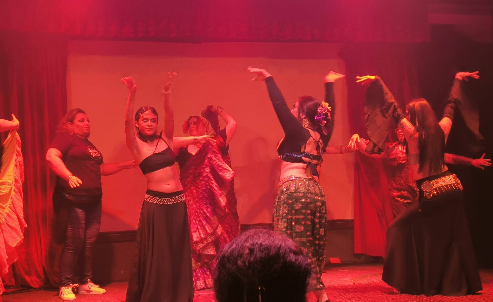
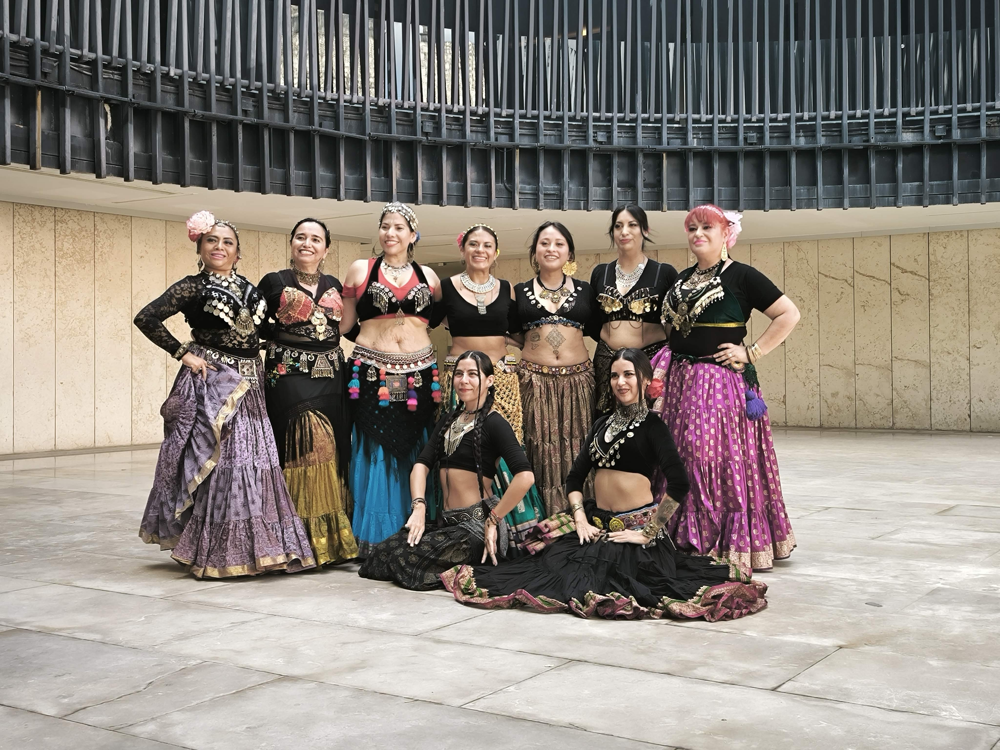
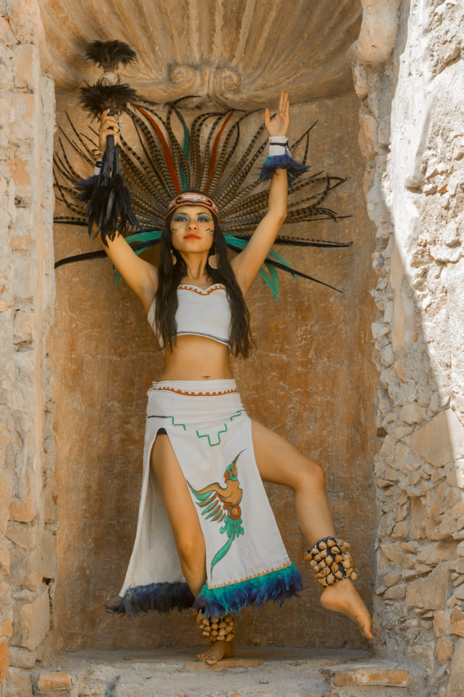

Sobre Mí
Bailarina de FCBD & Tribal Fusion Bellydance Fusión
Con más de 10 años de experiencia en los escenarios y en las aulas, mi pasión es transmitir no solo la técnica, sino el amor por el movimiento. Me especializo en crear ambientes de aprendizaje seguros y estimulantes donde cada alumno puede descubrir su potencial.